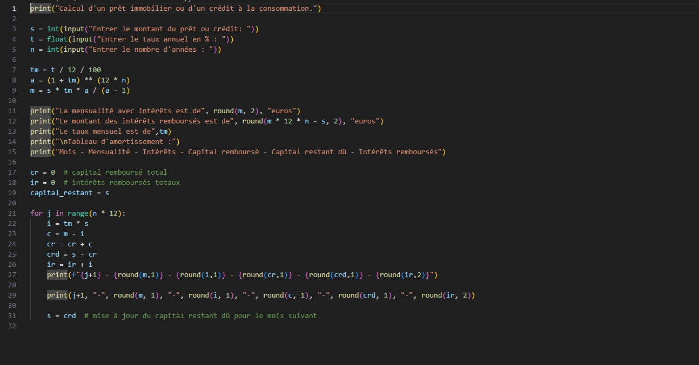
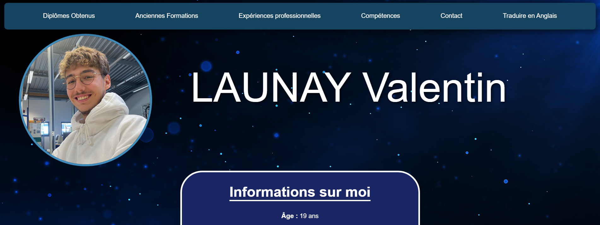

Je vais vous présenter les acquis que j’ai développés dans le cadre de la compétence "Créer des outils et applications informatiques pour les R&T",
à travers différents apprentissages critiques
AC13.01 : Utiliser un système informatique et ses outils.
Pendant toute mon année, j'ai eu l'occasion de travailler sur plusieurs systèmes d'exploitation à l'aide de divers logiciels ou méthodes de travail.
J'ai notamment utilisé des systèmes comme Windows 10 et 11, que j'emploie au quotidien, mais aussi des environnements basés sur Linux, avec la distribution "Debian".
Cette année m’a permis de découvrir le travail en ligne de commande (CLI), aussi bien sur Linux que sur Windows.
J'ai également pu approfondir mes compétences sur la suite Microsoft 365, en explorant et en découvrant de nouvelles fonctionnalités dans des logiciels tels que Word, Excel ou PowerPoint, grâce au module R1.11 Expression-Culture-Communication Professionnelles 1 durant le premier semestre.
Tout au long de l’année, j’ai aussi appris à utiliser des machines virtuelles, en manipulant des outils comme "Oracle VirtualBox" ou "VMWare Workstation Player".
Pour conclure : Je pense que au cours de mon année, j'ai pu acquérir les compétences qui sont demander sur le fait d'utiliser un système informatique en utilisant divers système comme
par exemple différents système d'exploitation.
AC13.02 : Lire, exécuter, corriger et modifier un programme.
Ce module m'a permis de progresser dans la compréhension et l'application de concepts en programmation Python,
aussi bien pour l’analyse de fichiers que pour le développement web dynamique. Voici un aperçu de mes travaux réalisés cette année.
Au cours de cette année, j'ai eu l'occasion de réaliser de nombreux programmes, principalement en Python, où j'ai pu découvrir et apprendre les bases de ce langage de programmation grâce au module
R1.07 : Fondamentaux de la programmation. À la suite de ce module, j'ai mené un projet en autonomie, dans lequel il fallait concevoir, à l'aide de trois scripts Python, une application capable d'identifier les plus gros fichiers présents dans un dossier.
Au cours du deuxième semestre, nous avons approfondi le langage de programmation Python en abordant, par exemple, les classes, l'utilisation des getters, des setters, ainsi que les instances, dans le cadre du module
R2.08 : Analyse et traitement de données structurées.
Dans cet exercice de travaux dirigés, l'objectif était de retrouver une adresse IP spécifique dans un fichier CSV et d'en indiquer le nombre d’occurrences.
En parallèle, durant ce second semestre, nous avons découvert le développement web dynamique avec bases de données dans le cadre du module
R2.09 : Initiation au développement Web. Pour ce module, nous avons utilisé le framework "Django", basé sur le langage Python. L'objectif principal était de comprendre et modifier les différents scripts générés automatiquement par Django.
À travers divers travaux dirigés et travaux pratiques, nous nous sommes exercés à la réalisation d'opérations CRUD (Create, Read, Update, Delete).
En fin de module, nous devions concevoir un projet intégrant deux entités en relation via des CRUD. J'ai ainsi choisi de créer une sorte de répertoire de collection de cartes associées à différentes personnes.
Grâce au module R2.13 : Mathématiques des systèmes numériques, nous avons eu la possibilité d'appliquer les mathématiques à l'aide de scripts Python. Nous avons principalement utilisé ce langage pour aborder le chapitre sur les suites.
À travers un exercice guidé, nous avons travaillé sur la création d’un script Python permettant de calculer un tableau d’amortissement d’un crédit immobilier, incluant les intérêts, le capital remboursé, etc.

Dans la continuité du module R2.09, nous avons approfondi l'utilisation de Django dans le cadre de la
SAE 2.03 : Mettre en place une solution informatique pour l’entreprise. L'objectif était de concevoir un site web avec une base de données externe, et de le déployer dans une machine virtuelle Linux.
R1.07 : Fondamentaux de la programmation
SAE 1.05 : Traiter des données
R2.08 : Analyse et traitement de données structurées
R2.09 : Initiation au développement Web
R2.13 : Mathématiques des systèmes numériques
AC13.03
Traduire un algorithme dans un langage et pour un environnement donnés.
Introduction : Cette compétence s’est développée tout au long de l’année grâce à l’apprentissage de l’algorithmique suivi de sa transposition en Python.
Elle m’a permis de comprendre les étapes nécessaires à la traduction d’une logique en code, avec une application concrète dans un environnement donné.
R1.07 : Fondamentaux de la programmation
En tout début d'année, nous avons eu l'opportunité d'apprendre le langage algorithmique. Cette étape a été réalisée avant l'apprentissage d’un langage de programmation.
Toutes ces notions d’algorithmique ont été abordées dans le module R1.07 : Fondamentaux de la programmation.
Par la suite, nous avons traduit les différents exercices réalisés en algorithme en scripts Python. Nous avons effectué un grand nombre d'exercices afin de bien assimiler
toutes les notions et compétences demandées.
Pour illustrer un exemple de travail effectué, nous avons réalisé en début de module un exercice d’algorithmique où un nombre aléatoire entre 1 et 100 devait être deviné.
Nous avons d'abord rédigé l’algorithme, puis, en fin de module, lors des travaux pratiques, nous l’avons converti en script Python.
R1.07 : Fondamentaux de la programmation
AC13.04 : Connaître l’architecture et les technologies d’un site web.
Introduction : Cette compétence s’est développée grâce à l’exploration progressive du développement web, depuis la création de pages statiques avec HTML/CSS
jusqu’à la mise en place de sites dynamiques avec Django et l’utilisation de bases de données. J’ai appris à comprendre l’organisation d’un site, ses composants
techniques ainsi que la manière dont le front-end et le back-end interagissent.
R1.09 : Introduction aux technologies web
SAE 1.04 : Se présenter sur internet
R2.09 : Initiation au développement Web
Pendant toute notre année, nous avons pu explorer en profondeur les technologies liées à la création de sites web.
En début d’année, nous avons d’abord étudié le fonctionnement de la partie "Front-End" d’un site web, en apprenant les langages HTML et CSS dans le cadre du module R1.09 : Introduction aux technologies web.
Nous avons eu l’opportunité de réaliser plusieurs travaux pratiques au cours desquels nous avons conçu nos premières pages web statiques.
Progressivement, j’ai acquis des compétences me permettant d’améliorer la qualité et l’apparence des pages que nous développions.
Par la suite, nous avons dû réaliser un projet dans le cadre de la SAE 1.04 : Se présenter sur internet, où il nous était demandé de créer un CV sous forme de page web statique.
Pour ce faire, nous avons mobilisé les connaissances acquises dans le module R1.09.
Voici un exemple de travail que j’ai pu réaliser lors d’un travail dirigé : il s’agissait de reproduire un site qui nous était fourni en modèle, dans le cadre du module R1.09,
puis réutilisé pour le projet de la SAE 1.04 : Se présenter sur internet.

Lors du deuxième semestre, nous avons approfondi notre compréhension des pages web en découvrant le "Web dynamique" à travers le framework Django, dans le cadre du module
R2.09 : Initiation au développement Web.
Nous avons ainsi appris à connecter des bases de données à des pages web.
Au fil des différents travaux dirigés et travaux pratiques que nous avons réalisés, nous avons exclusivement développé des pages web sous forme de CRUD (Create, Read, Update, Delete),
en mettant en œuvre les notions de routage, de modèles de données et de vues dynamiques.
En fin de deuxième semestre, nous avons réalisé un projet dont l’objectif était de mettre en place une solution informatique sous forme de page web dynamique, dans le cadre de la
SAE 2.03 : Mettre en place une solution informatique pour l’entreprise.
Lors de ce projet, nous avons développé cinq CRUD interconnectés afin de concevoir un gestionnaire de notes.
Nous devions également créer un fichier SQL pour la mise en place de la base de données.
Les bases du langage SQL nous avaient été enseignées dans le module R2.07 : Sources de données, où nous avons appris les concepts fondamentaux liés aux requêtes, aux relations entre tables et à la structuration des données.
Pour conclure sur cet apprentissage, je pense avoir acquis l’ensemble des compétences nécessaires dans la partie "Front-End".
Toutefois, en ce qui concerne le "Back-End", je ressens encore le besoin de progresser afin de mieux maîtriser les concepts et compétences demandés.
R1.09 : Introduction aux technologies web
SAE 1.04 : Se présenter sur internet
R2.07 : Sources de données
R2.09 : Initiation au développement Web
SAE 2.03 : Mettre en place une solution informatique pour l’entreprise
AC13.05 : Choisir les mécanismes de gestion de données adaptés au développement de l’outil et argumenter ses choix.
Introduction : Cette compétence s’est construite progressivement à travers plusieurs projets et modules, qui m'ont permis d'apprendre à organiser, structurer
et exploiter des données efficacement. J’ai pu expérimenter différentes techniques de gestion, de la manipulation de fichiers JSON/CSV à la conception de bases de données SQL.
Lors du premier semestre, nous avons été initiés à la gestion de données à travers la SAÉ 1.05 : Traiter des données.
L'objectif de ce projet était de sélectionner un dossier et d’y identifier les plus gros fichiers.
Pour cela, il fallait récupérer le nom de chaque fichier ainsi que sa taille, toutes ces informations étant ensuite enregistrées dans un fichier au format JSON.
Pour mener à bien ce projet, j'ai développé trois scripts Python, comme demandé :
– Un script pour récupérer le chemin du dossier choisi ;
– Un script pour extraire les données des fichiers trouvés et les convertir en JSON ;
– Un script pour afficher les résultats sous forme d’application.
Voici le résultat final de mon application :
Lors du deuxième semestre, nous avons suivi plusieurs modules consacrés à la gestion de données.
Dans le module R2.07 : Sources de données, nous avons appris les bases du langage SQL. Ce module nous a permis de découvrir les commandes fondamentales pour créer des bases de données, des tables,
ainsi que les relations entre elles à l’aide de clés primaires.
En parallèle, nous avons approfondi la gestion de données avec le module R2.08 : Analyse et traitement de données structurées.
Dans ce module, nous avons étudié différents formats de fichiers de données tels que JSON et CSV. Nous avons appris à créer et manipuler ces fichiers pour structurer et transporter des informations,
ainsi qu'à les exploiter dans des scripts Python.
Nous avons également abordé d'autres outils comme les expressions régulières (REGEX), qui permettent de sélectionner des caractères de manière avancée pour analyser ou filtrer des données textuelles.
Pour conclure : je pense que cet apprentissage critique m’a permis d’acquérir et de développer de nombreuses compétences.
Cependant, je suis conscient qu’il me reste encore beaucoup à apprendre pour maîtriser pleinement l’ensemble des notions demandées.
SAE 1.05 : Traiter des données
R2.07 : Sources de données
R2.08 : Analyse et traitement de données structurées
AC13.06 : S’intégrer dans un environnement propice au développement et au travail collaboratif.
Introduction : Cet apprentissage critique repose sur ma capacité à m'adapter aux outils et méthodes de collaboration, que ce soit en groupe ou dans un environnement de développement individuel.
Au fil des projets, j’ai appris à organiser le travail collectif, utiliser des plateformes adaptées et à tirer profit d'environnements propices à l'efficacité.
Tout au long de mon année, j'ai eu l'occasion de travailler sur différents projets en collaboration avec diverses personnes.
Pour cela, j'ai dû trouver et adopter des outils de travail collaboratif, tels que des fichiers partagés en ligne permettant un accès commun.
Par exemple, dans le module R1.15 : Gestion de projet, j'ai utilisé les documents partagés via Google Drive.
Dans d’autres projets, comme la SAE 1.05 : Traiter des données et la SAE 2.03 : Mettre en place une solution informatique pour l’entreprise,
j'ai utilisé des technologies comme Git pour partager les versions des projets avec mes collaborateurs.
La communication au sein des groupes a également été facilitée grâce à l’utilisation de plateformes comme Discord.
J’ai aussi eu recours au stockage et au partage de fichiers sur le cloud, notamment avec la suite Office 365 de Microsoft.
Concernant mon intégration dans un environnement propice au développement, j’ai utilisé deux éditeurs de code au cours de l’année.
J’ai commencé avec PyCharm, un éditeur principalement dédié au langage Python.
Par la suite, j’ai décidé de découvrir Visual Studio Code, un éditeur que je trouve plus complet. Il permet de programmer dans une grande variété de langages,
et je le trouve plus intuitif que PyCharm en termes d’interface.
Pour conclure : d’après moi, toutes les compétences demandées dans cette Apprentissage Critique ont pu être acquises au cours de cette première année de BUT.
J’ai su m’intégrer dans un environnement favorable au développement à l’aide de différents outils adaptés, et j’ai pu mettre en place des solutions de travail collaboratif
efficaces selon les projets et les membres de chaque groupe.
R1.15 : Gestion de projet
SAE 1.05 : Traiter des données
SAE 2.03 : Mettre en place une solution informatique pour l’entreprise